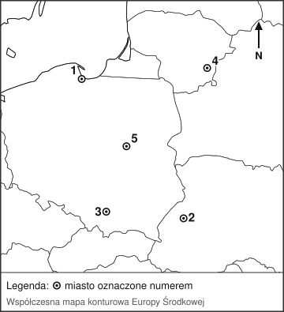

Zadanie I. Starożytny Egipt
0–5 p.Dopasuj pojęcie do opisu. Wpisz litery A–F. Jedna odpowiedź jest zbędna.
| 1. Władca Egiptu, uważany przez poddanych za żyjącego boga. | |
| 2. Pismo starożytnych Egipcjan, złożone ze znaków obrazkowych. | |
| 3. Materiał do pisania wytwarzany z rośliny rosnącej nad Nilem. | |
| 4. Grobowiec faraona wznoszony z kamienia w kształcie ostrosłupa. | |
| 5. Zabieg zabezpieczający ciało zmarłego przed rozkładem. |
Zadanie II. Ateny i Sparta
0–5 p.Oceń prawdziwość zdań. Wpisz P albo F.
| 1. W demokracji ateńskiej prawa polityczne przysługiwały wszystkim mieszkańcom miasta, także kobietom i niewolnikom. | |
| 2. W Sparcie równocześnie panowało dwóch królów. | |
| 3. Wojna peloponeska zakończyła się zwycięstwem Aten nad Spartą. | |
| 4. W Atenach narodziła się demokracja, a najważniejszym organem władzy było zgromadzenie ludowe. | |
| 5. Wychowanie spartańskie przygotowywało chłopców przede wszystkim do służby wojskowej. |
Zadanie III. Życie codzienne w starożytnym Rzymie
0–4 p.Wpisz pojęcie pasujące do opisu.
| 1. Owalna budowla, w której odbywały się walki gladiatorów. | |
| 2. Publiczne łaźnie rzymskie, będące też miejscem spotkań i rozmów. | |
| 3. Główny plac Rzymu, ośrodek życia politycznego, religijnego i handlowego. | |
| 4. Powiedzenie określające zjednywanie sobie ubogich rozdawnictwem zboża i widowiskami. |
Zadanie IV. Upadek cesarstwa zachodniorzymskiego
0–5 p.Uzupełnij tekst, wybierając wyrazy z ramki. Jedna odpowiedź jest zbędna; w razie potrzeby dopasuj formę gramatyczną.
W 395 r. cesarz (1) podzielił państwo rzymskie między dwóch synów – tak powstały cesarstwo wschodnie i cesarstwo zachodnie. Już wcześniej na ziemie cesarstwa napływały plemiona germańskie, uciekające przed koczownikami zwanymi (2). W (3) r. germański wódz (4) pozbawił władzy ostatniego cesarza zachodniorzymskiego. Wydarzenie to historycy uznają za koniec (5) i początek średniowiecza.
Zadanie V. Wikingowie i Normanowie
0–5 p.Dopasuj pojęcie lub nazwę do opisu. Wpisz litery A–F. Jedna odpowiedź jest zbędna.
| 1. Skandynawscy wojownicy i żeglarze, którzy od VIII w. napadali na wybrzeża Europy. | |
| 2. Długi, smukły okręt wojenny ludów północy, poruszany wiosłami i żaglem. | |
| 3. Żeglarz, który około 1000 r. dotarł do wybrzeży Ameryki Północnej. | |
| 4. Kraina w północnej Francji, nadana w 911 r. wodzowi normańskiemu. | |
| 5. Bitwa z 1066 r., po której Wilhelm Zdobywca opanował Anglię. |
Zadanie VI. Państwo Franków
0–4 p.Dopasuj postać lub wydarzenie do opisu. Wpisz litery A–E. Jedna odpowiedź jest zbędna.
| 1. Władca Franków, który w 496 r. przyjął chrzest wraz ze swoją drużyną. | |
| 2. Wódz Franków, który w 732 r. pod Poitiers powstrzymał najazd Arabów. | |
| 3. Król Franków koronowany w 800 r. w Rzymie na cesarza. | |
| 4. Umowa z 843 r., na mocy której państwo Franków podzielono na trzy części. |
Zadanie VII. Słowianie i sąsiedzi Polski
0–4 p.Oceń prawdziwość zdań. Wpisz P albo F.
| 1. Słowian dzieli się na trzy grupy: zachodnich, wschodnich i południowych. | |
| 2. Ruś Kijowska przyjęła chrzest z Bizancjum za panowania Włodzimierza Wielkiego. | |
| 3. Czechy przyjęły chrzest później niż państwo Mieszka I. | |
| 4. Państwo wielkomorawskie przyjęło chrześcijaństwo w obrządku słowiańskim dzięki misji Cyryla i Metodego. |
Zadanie VIII. Obraz jako źródło historyczne
0–5 p.
Jan Matejko, „Bitwa pod Grunwaldem”, 1878 r., olej na płótnie, 426 × 987 cm; Muzeum Narodowe w Warszawie (nr inw. MP 443). Reprodukcja: Wikimedia Commons, domena publiczna.
1. Podaj imię i nazwisko malarza, który namalował ten obraz.
2. Podaj datę roczną bitwy przedstawionej na obrazie.
3. Podaj nazwę zakonu rycerskiego, przeciwko któremu toczono tę bitwę.
4. Wymień dwa państwa, których wojska walczyły w tej bitwie po wspólnej stronie.
5. Wyjaśnij, dlaczego ten obraz nie jest wiarygodnym źródłem wiedzy o przebiegu bitwy.
Zadanie IX. Wielkie odkrycia geograficzne
0–5 p.Oceń, czy podane zjawisko było przyczyną (P), czy skutkiem (S) wielkich odkryć geograficznych.
| 1. Poszukiwanie nowej drogi morskiej do Indii po opanowaniu Bliskiego Wschodu przez Turków. | |
| 2. Napływ do Europy wielkich ilości złota i srebra, powodujący wzrost cen. | |
| 3. Udoskonalenie karaweli, kompasu i astrolabium. | |
| 4. Powstanie rozległych imperiów kolonialnych Hiszpanii i Portugalii. | |
| 5. Zniszczenie państw Azteków i Inków przez konkwistadorów. |
Zadanie X. Miasta Rzeczypospolitej Obojga Narodów
0–6 p.Na współczesnej mapie konturowej oznaczono pięć miast ważnych dla dziejów Rzeczypospolitej. Do każdego opisu dopisz właściwy numer 1–5.

Mapa bazowa: SimpleMapLab na podstawie danych Natural Earth 1:50 mln, domena publiczna (CC0); oznaczenia i opracowanie zadania: własne.
| A. Miasto koronacyjne królów Polski, siedziba Akademii Krakowskiej. | |
| B. Główny port Rzeczypospolitej nad Bałtykiem, przez który wywożono zboże. | |
| C. Stolica Wielkiego Księstwa Litewskiego. | |
| D. Miasto, do którego za panowania Zygmunta III Wazy przeniesiono stolicę państwa. | |
| E. Główne miasto Rusi Czerwonej, przyłączonej do Polski przez Kazimierza Wielkiego. |
F. Podaj nazwę rzeki, którą spławiano zboże do miasta oznaczonego numerem 1.
Zadanie XI. Wieś i gospodarka folwarczna
0–6 p.A. Wpisz pojęcie pasujące do opisu.
| 1. Duże gospodarstwo szlacheckie, produkujące zboże przeznaczone na sprzedaż. | |
| 2. Przymusowa, nieodpłatna praca chłopa na gruntach pana. | |
| 3. Zależność osobista chłopa od pana, zakazująca mu opuszczenia wsi bez zgody. | |
| 4. Określenie Rzeczypospolitej jako głównego dostawcy zboża dla Europy Zachodniej. |
B. 5. Podaj nazwę stanu społecznego, do którego należeli właściciele folwarków.
6. Wyjaśnij, dlaczego rozwój folwarków pogarszał położenie chłopów.
Zadanie XII. Obyczaje i kultura szlachecka
0–7 p.Rozwiąż krzyżówkę, a następnie wyjaśnij znaczenie hasła z zaznaczonej kolumny.
| 1. Kultura i obyczajowość szlachty polskiej, wywodzącej swój rodowód od starożytnych Sarmatów. |
| 2. Urzędnik stojący na czele województwa. |
| 3. Wierzchni strój noszony przez szlachcica, zapinany na pętlice. |
| 4. Przedstawiciel szlachty wybrany na sejmiku, aby reprezentować ziemię na sejmie walnym. |
| 5. Ciężka jazda Rzeczypospolitej, słynąca ze skrzydeł u zbroi. |
| 6. Broń biała, będąca nieodłącznym elementem stroju szlacheckiego. |
| 1. | |||||||||
| 2. | |||||||||
| 3. | |||||||||
| 4. | |||||||||
| 5. | |||||||||
| 6. |
Hasło:
Wyjaśnij, czym było hasło i przeciwko komu było skierowane. (1 p.)
Zadanie XIII. Rzeczpospolita w XVII wieku
0–6 p.Uporządkuj wydarzenia chronologicznie. Wpisz cyfry od 1 (najwcześniejsze) do 6 (najpóźniejsze).
| A. Zawarcie pokoju w Oliwie. | |
| B. Odsiecz wiedeńska. | |
| C. Wybuch powstania Bohdana Chmielnickiego. | |
| D. Zawarcie rozejmu w Andruszowie z Rosją. | |
| E. Obrona Jasnej Góry przed Szwedami. | |
| F. Kapitulacja pospolitego ruszenia pod Ujściem. |
Zadanie XIV. Analiza tekstu źródłowego
0–6 p.„Wielka Boga Człowieka Matko, Najświętsza Dziewico. Ja, Jan Kazimierz [...] do Najświętszych stóp Twoich przypadłszy, Ciebie dziś za Patronkę moją i za Królową państw moich obieram. Tak samego siebie, jak i moje Królestwo polskie, księstwo litewskie, ruskie, pruskie, mazowieckie, żmudzkie, inflanckie [...] Twojej osobliwej opiece i obronie polecam [...].
Obiecuję wreszcie i ślubuję, że kiedy [...] nad wrogami, a szczególnie nad Szwedem odniosę zwycięstwo, będę się starał u Stolicy Apostolskiej, aby na podziękowanie [...] dzień ten corocznie uroczyście [...] był święcony [...].
Skoro zaś z wielką serca mego żałością wyraźnie widzę, że za jęki i ucisk kmieci spadły w tym siedmioleciu na Królestwo moje [...] plagi: powietrza, wojny i innych nieszczęść, przyrzekam ponadto i ślubuję, że po nastaniu pokoju wraz ze wszystkimi stanami wszelkich będę używał środków, aby lud Królestwa mego od niesprawiedliwych ciężarów i ucisków wyzwolić”.
Śluby złożone przez króla w katedrze lwowskiej 1 kwietnia 1656 r. Cyt. za: Liturgia godzin, t. II, Pallottinum, Poznań 1984, s. 1390 (skróty zaznaczono). Objaśnienia: kmiecie – chłopi, plaga powietrza – epidemia, siedmiolecie – ostatnie siedem lat.
1. Podaj imię władcy składającego ślubowanie oraz nazwę dynastii, z której pochodził. (1 p.)
2. Podaj nazwę wojny, w czasie której złożono to ślubowanie. (1 p.)
3. Wypisz z tekstu nazwę nieprzyjaciela, nad którym król chce odnieść zwycięstwo. (1 p.)
4. Kogo król obrał za Patronkę i Królową swoich państw? (1 p.)
5. Wypisz z tekstu obietnicę króla dotyczącą chłopów. (1 p.)
6. Wyjaśnij, czy król spełnił tę obietnicę. (1 p.)
Zadanie XV. Kultura baroku w Europie
0–5 p.Dopasuj pojęcie lub postać do opisu. Wpisz litery A–F. Jedna odpowiedź jest zbędna.
| 1. Styl w sztuce XVII w., cechujący się przepychem, ruchem i silnymi kontrastami światła i cienia. | |
| 2. Okazała rezydencja Ludwika XIV, naśladowana przez dwory całej Europy. | |
| 3. Włoski rzeźbiarz i architekt, twórca kolumnady przed bazyliką św. Piotra w Rzymie. | |
| 4. Niderlandzki malarz, mistrz światłocienia, autor „Straży nocnej”. | |
| 5. Flamandzki malarz barokowy, znany z rozbudowanych, pełnych ruchu kompozycji. |
Zadanie XVI. Kolonializm i gospodarka nowożytna
0–5 p.Oceń prawdziwość zdań. Wpisz P albo F.
| 1. Pierwsze imperia kolonialne zbudowały Anglia i Francja, wyprzedzając Hiszpanię i Portugalię. | |
| 2. Kolonie to ziemie podbite i uzależnione politycznie oraz gospodarczo od państwa europejskiego. | |
| 3. Plantacje w Ameryce opierały się głównie na pracy najemnej wolnych robotników z Europy. | |
| 4. Handel trójkątny łączył Europę, Afrykę i Amerykę; z Afryki wywożono niewolników. | |
| 5. Z Ameryki sprowadzono do Europy między innymi ziemniaki, kukurydzę, pomidory i kakao. |
Zadanie XVII. Oświecony absolutyzm
0–5 p.A. Dopasuj postać lub pojęcie do opisu. Wpisz litery A–E. Jedna odpowiedź jest zbędna.
| 1. Król Prus zwany Wielkim, który nazwał siebie „pierwszym sługą państwa”. | |
| 2. Caryca Rosji, która rozszerzyła granice państwa i uczestniczyła w rozbiorach Polski. | |
| 3. Władczyni Austrii, która przeprowadziła reformy szkolnictwa i administracji. | |
| 4. Ustrój, w którym monarcha ma pełnię władzy, ale rządzi w duchu idei oświecenia. |
B. 5. Podaj dwie reformy typowe dla panowania oświeconych monarchów.
Zadanie XVIII. Sejm Wielki i Konstytucja 3 maja
0–5 p.Uzupełnij tekst, wybierając wyrazy z ramki. Jedna odpowiedź jest zbędna.
Obrady Sejmu Wielkiego, zwanego też Czteroletnim, rozpoczęły się w (1) r. Jego najważniejszym dziełem była uchwalona 3 maja (2) r. Ustawa Rządowa, czyli Konstytucja 3 maja – pierwsza taka ustawa w Europie i druga na świecie, po konstytucji (3). Konstytucja znosiła wolną elekcję oraz (4), czyli prawo jednego posła do zerwania sejmu. Władzę wykonawczą powierzono królowi wraz z rządem zwanym (5).
Zadanie XIX. Rozbiory i upadek Rzeczypospolitej
0–7 p.A. Uzupełnij tabelę datami rocznymi rozbiorów Polski.
| Rozbiór | Rok | Państwa uczestniczące |
|---|---|---|
| 1. Pierwszy rozbiór | Rosja, Prusy, Austria | |
| 2. Drugi rozbiór | Rosja, Prusy | |
| 3. Trzeci rozbiór | Rosja, Prusy, Austria |
B. 4. Podaj nazwę konfederacji zawiązanej w 1792 r. przeciwko Konstytucji 3 maja.
5. Podaj imię i nazwisko przywódcy powstania z 1794 r.
6. Podaj nazwę bitwy z 1794 r., w której o zwycięstwie zadecydował udział kosynierów.
7. Podaj imię i nazwisko ostatniego króla Polski.